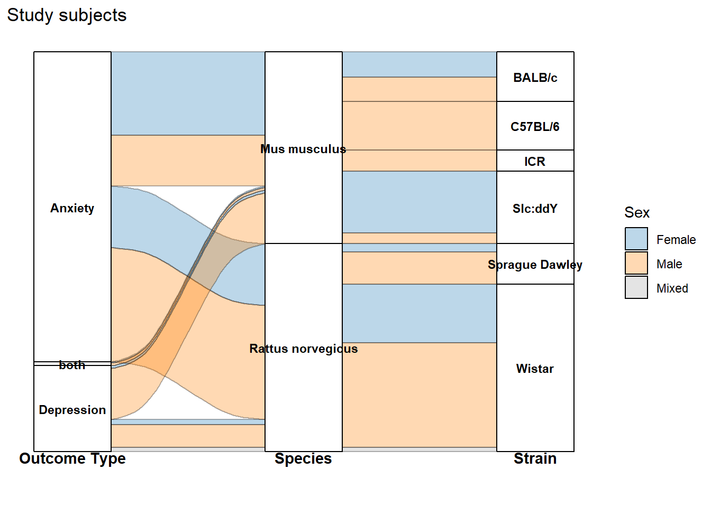

pacman::p_load(
DT,
dtplyr,
here,
knitr,
tidyverse,
patchwork,
metafor,
orchaRd, ggalluvial, patchwork
)Alluvial plot
The alluvial plots below summarize the distribution of effect sizes across key study characteristics (e.g., outcome type, species/strain, sex, and exposure design variables).
NotePost-processing for the manuscript figure
The code here reproduces the alluvial plots and exports them as PDF/JPG.
For the final manuscript figure, we made minor edits in vector-graphics software (e.g., Illustrator/Inkscape) to improve readability—primarily manual repositioning of labels, spacing adjustments, and small layout tweaks. These edits do not change the underlying data or flows; they only improve figure legibility.
db <- readr::read_csv(here(
"..","data","db_effect_sizes.csv")) %>%
mutate(across(c(C_n, Ex_n, C_mean, Ex_mean, C_SE, Ex_SE, C_SD, Ex_SD), as.numeric))%>%
mutate(across(where(is.character), as.factor))db_freq <- db %>%
# Group by all variables that define a unique flow path and the frequency count
group_by(Study_ID, Outcome_type, Species_latin, Strain, Sex) %>%
# Count the number of rows (observations) in each group
summarise(Freq = n(), .groups = 'drop')custom_colors <- c(
"Female" = "#1F78B4", # Deep Blue
"Male" = "#FF7F00", # Bright Orange
"Mixed" = "#A6A6A6" # Neutral Gray
)
# --- Plotting the Aggregated Data (db_freq) ---
Out_spp_strain<-ggplot(db_freq,
# Explicitly use the calculated Freq column for the flow height
aes(y = Freq,
axis1 = Outcome_type, axis2 = Species_latin, axis3 = Strain)) +
# 1. Flow and Transparency
geom_flow(color = "black",
aes(fill = as.factor(Sex)),
alpha = 0.3) +
# Add the strata boxes
geom_stratum() +
# 2. Adjust Strata Text (Labels)
geom_text(stat = "stratum",
aes(label = after_stat(stratum)),
size = 3,
discern = TRUE,
color = "black",
fontface = "bold",
vjust = 0.5) +
# 3. Apply Custom Color Palette
scale_fill_manual(
name = "Sex",
values = custom_colors
) +
labs(
title = "Study subjects")+
# 4. Axis Headings at the BOTTOM
annotate("text", x = 1, y = min(db_freq$Freq) * -0.1, label = "Outcome Type", fontface = "bold", vjust = 1) +
annotate("text", x = 2, y = min(db_freq$Freq) * -0.1, label = "Species", fontface = "bold", vjust = 1) +
annotate("text", x = 3, y = min(db_freq$Freq) * -0.1, label = "Strain", fontface = "bold", vjust = 1) +
# 5. Hide Axes and Clean Theme
scale_y_continuous(labels = NULL) +
theme(
plot.margin = margin(t = 5, r = 5, b = 25, l = 5, unit = "pt"),
axis.line.x = element_blank(),
axis.ticks.x = element_blank(),
axis.text.x = element_blank(),
axis.title.y = element_blank(),
axis.text.y = element_blank(),
axis.ticks.y = element_blank(),
panel.grid.major = element_blank(),
panel.grid.minor = element_blank(),
panel.background = element_blank()
)Out_spp_strain
db_fixed_assay <- db %>%
# Filter the data to ensure we only rename the categories we listed
mutate(
# Create a new, shortened column for the Assay Type labels
Assay_initials = case_when(
Assay_type == "Elevated Plus Maze" ~ "EPM",
Assay_type == "Open Field Test" ~ "OFT",
Assay_type == "Light-Dark Box" ~ "LDB",
Assay_type == "Novelty Suppressed Feeding (NSF)" ~ "NSF",
Assay_type == "Sucrose Preference Test (SPT)" ~ "SPT",
Assay_type == "Forced Swim Test (FST)" ~ "FST",
Assay_type == "Tail Suspension Test (TST)" ~ "TST",
Assay_type == "Nest building" ~ "Nest",
Assay_type == "Marble burying" ~ "MB",
TRUE ~ Assay_type # Keep any other unlisted Assay_type names as they are
)
) %>%
# Group by the new axis variables and the flow variable (`Induced behaviour`)
group_by(Study_ID, Lifestage_exposure, Music_exposure_duration, Assay_initials, `Induced behaviour`) %>%
# Count the number of observations (Freq)
summarise(Freq = n(), .groups = 'drop')
# --- 2. PLOTTING STEP ---
custom_colors <- c(
"Innate" = "blue",
"Induced" = "red"
)
assay_plot <- ggplot(db_fixed_assay,
# Use Freq for flow height
# Axis 3 is now Assay_initials
aes(y = Freq,
axis1 = Lifestage_exposure, axis2 = Music_exposure_duration, axis3 = Assay_initials)) +
# 1. Flow and Transparency (alpha = 0.3)
geom_flow(color = "black",
aes(fill = as.factor(`Induced behaviour`)),
alpha = 0.3) +
# Add the strata boxes
geom_stratum() +
# 2. Adjust Strata Text (Labels) - Will now show the initials (EPM, SPT, etc.)
geom_text(stat = "stratum",
aes(label = after_stat(stratum)),
size = 3,
discern = TRUE,
color = "black",
fontface = "bold",
vjust = 0.5) +
# 3. Apply Custom Color Palette and Legend Title
scale_fill_manual(
name = "Behavioral Mechanisms",
values = custom_colors
) +
labs(
title = "Music exposure"
) +
# 4. Axis Headings at the BOTTOM
# Axis 3 heading is changed to 'Assay Type'
annotate("text", x = 1, y = min(db_fixed_assay$Freq) * -0.1, label = "Age", fontface = "bold", vjust = 1) +
annotate("text", x = 2, y = min(db_fixed_assay$Freq) * -0.1, label = "Duration", fontface = "bold", vjust = 1) +
annotate("text", x = 3, y = min(db_fixed_assay$Freq) * -0.1, label = "Assay Type", fontface = "bold", vjust = 1) +
# 5. Hide Axes and Clean Theme
scale_y_continuous(labels = NULL) +
theme(
plot.margin = margin(t = 5, r = 5, b = 25, l = 5, unit = "pt"),
axis.line.x = element_blank(),
axis.ticks.x = element_blank(),
axis.text.x = element_blank(),
axis.title.y = element_blank(),
axis.text.y = element_blank(),
axis.ticks.y = element_blank(),
panel.grid.major = element_blank(),
panel.grid.minor = element_blank(),
panel.background = element_blank()
)assay_plot
plot1<-(Out_spp_strain/assay_plot)+ plot_annotation(
tag_levels = 'A'
)ggsave(filename = here("..","Plots", "alluvial_raw.pdf"),
plot = plot1,
dpi = 300, device = cairo_pdf, width = 12,
height = 15)
ggsave(filename = here("..","Plots", "alluvial_raw.jpg"),
plot = plot1,
width = 12,
height = 15,
dpi = 300)